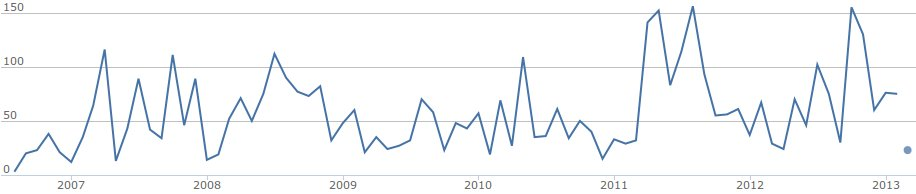
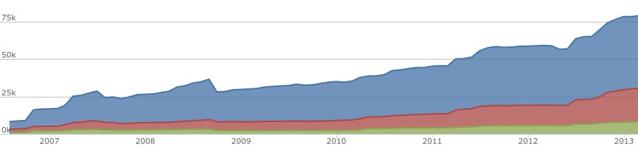
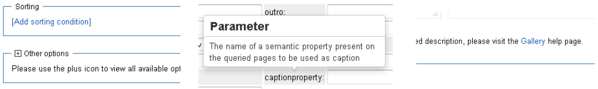

Yearly LolCats overview
Caturday will not be stopped!
Yearly SMW overview
Presentation by @JeroenDeDauw
bit.ly/smw-2013
About me
- MW dev since 2009
- SMW maintainer
- Wikidata developer
- Passion for code quality
- Lolcats
Overview
- Development
- Infrastructure
- SMW 1.8
- SMW 1.9 / roadmap
Development
Contributors
~27 developers (up from 18), 67 total
"Large, active development team", top 10%
Maintainers: Markus Krötzsch, James Hong Kong & Jeroen
Commits
~900 commits  "Stable Y-O-Y development activity"
Lines of code
59k => 79k  "Mature, well-established codebase"
Some extensions
- SRF: ~500 commits, up 115%
- SRF: ~22 developers, up 100%
- (S)M: ~22 developers, up 80%
Infrastructure
The SMW wiki
New server
- Faster box, better caching
- More frequent updates
- Doxygen back up and running
- CI: tests, coverage, nightlies?
Git migration
SMW 1.8
Compatibility
- Dropped support for MW 1.16
- Added support for MW 1.19 and 1.20
- Added support for PHP 5.4.x
SQLStore3
- TODO
Ask UI improvements
- Less cluttered, more dynamic
- Better documentation 
Tooltip improvements
- Old tooltips
horriblesub-optimal - Rewritten using qtip 2
- Used by SMW and extensions
- semantic-mediawiki.org/wiki/Help:Tooltip
Ask API
- Ask API now stable
- Sorting support added
- Continuation support added
- semantic-mediawiki.org/wiki/Ask_API
JSON result format
- Changed to match the Ask API
- Compatibility via syntax=obsolete
- semantic-mediawiki.org/wiki/Help:JSON_format
Improved continuation links
- Generic link generation
- All result formats
Unit tests
- First unit tests, integrated with MW
- Only coverage of some components so far
- New tests being added
Property statistics
- TODO
Query info now stored
- Property:Has query
- Property:Query string
- Property:Query format
- Property:Query size
- Property:Query depth
So you can query for queries! :)
The total number of queries
{{#ask:
[[Query size::+]]
|format=count
}}
Number of pages with queries
{{#ask:
[[Has query::+]]
|format=count
}}
# queries with format=count
{{#ask:
[[Query format::count]]
|format=count
}}
# pages with a query with size > 10
{{#ask:
[[Has query.Query size::>10]]
|format=count
}}
The 10 largest queries with their size and query string
{{#ask:
[[Query string::+]]
|?Query size
|?Query string
|sort=Query size
|order=desc
|limit=10
}}
Roadmap
SMW 1.9
Loosely scheduled for April 2013
- Dropped support for MW 1.17 and 1.18
- Added support for MW 1.21
- Dropped support for PHP 5.2.x
- Dropped SQLStore2
SMW 1.9 new features
- Script to rebuild the property statistics
- +sep= as multiple value separator in #set and #subobject
- Display cache information in concept pages
- Added various CSS classes
- More tests
SMW 1.10?
Loosely scheduled for August 2013
- Make use of DataValues library
- Make use of the Ask library
Further roadmap
- Multiple sources of data
- Improving Special:Ask UI
- Code quality improvements
- More tests
Your ideas and support are welcome!

Questions?
Special:Links
Special:Attribution
- Slides: CC BY-SA 3.0, Jeroen De Dauw
- Slide engine: reveal.js, Copyright (C) 2013 Hakim El Hattab